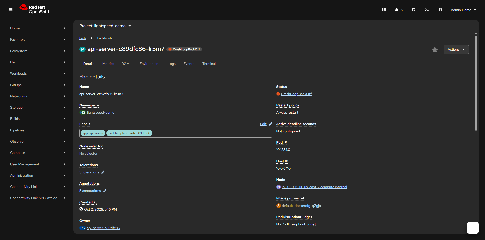
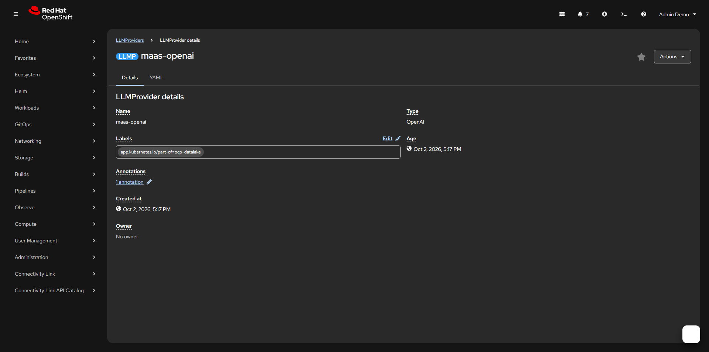
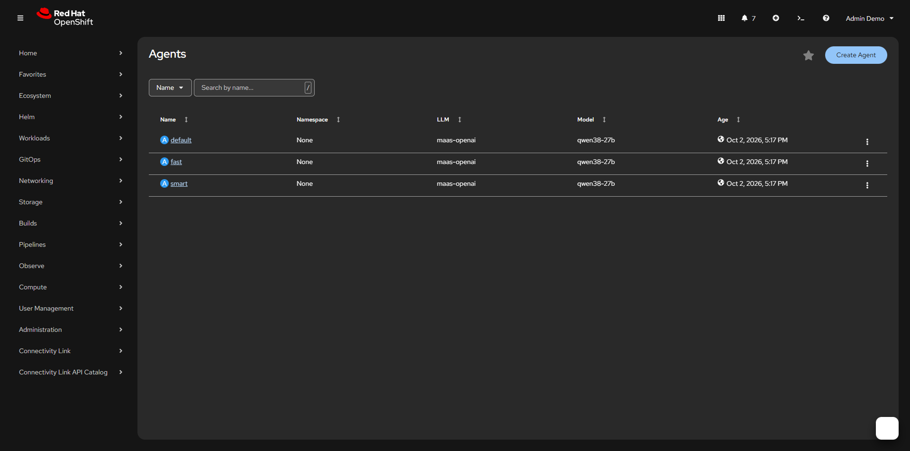
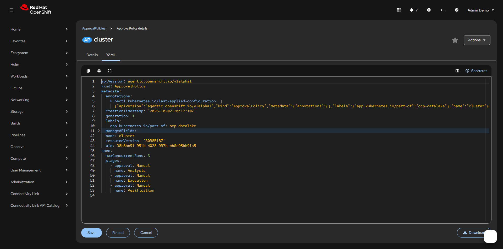
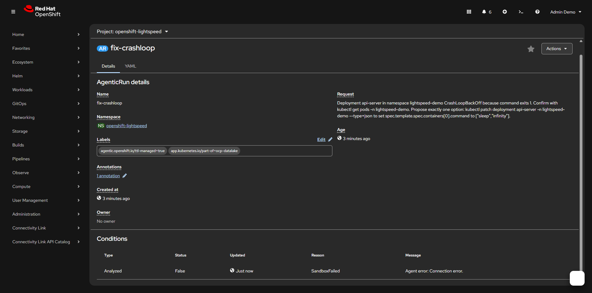
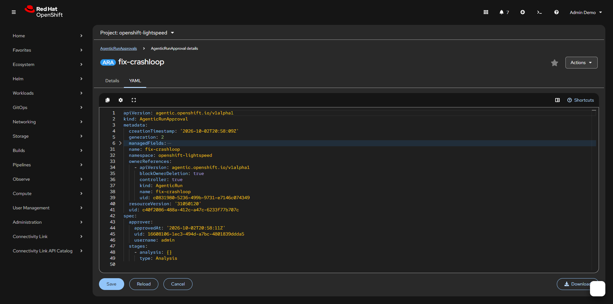
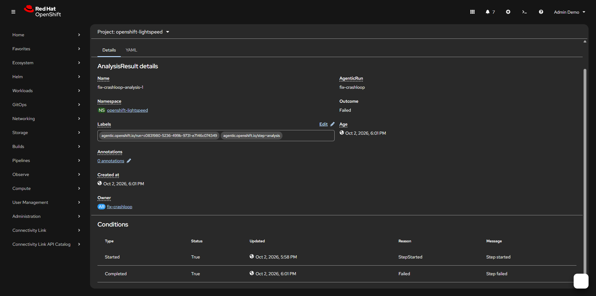
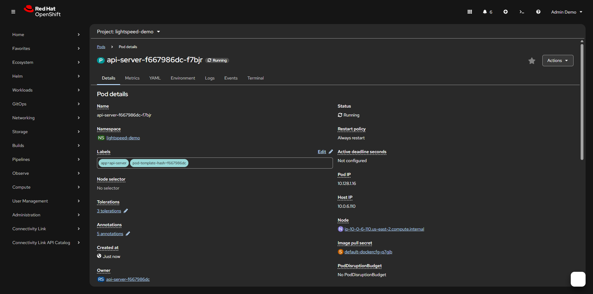

A real CrashLoopBackOff, diagnosed by Lightspeed Agentic with a person approving each stage.
Operator image lightspeed-agentic-rhel9-operator:1.1.4. Model qwen38-27b.
Captures from the OpenTLC sandbox, 2 Oct 2026.

Step 01The failing podDeployment api-server in lightspeed-demo. The container command exits 1, so the pod stays in CrashLoopBackOff.

Step 02LLMProviderCluster LLMProvidermaas-openai, type OpenAI. Agents use this provider for qwen38-27b.

Step 03Agentssmart, default, and fast. Each points at maas-openai and model qwen38-27b. Analysis uses smart, execution default, verification fast.

Step 04ApprovalPolicyCluster policy cluster. Analysis, Execution, and Verification are Manual. Up to 3 runs at once.

Step 05AgenticRunfix-crashloop in openshift-lightspeed. The request asks for one option: set the container command to sleep infinity.

Step 06AgenticRunApprovalSame name as the run. The Analysis stage is approved. Later stages are added one at a time.

Step 07AnalysisResultfix-crashloop-analysis-1, owned by the run. Outcome Failed. Started is True; Completed reason is Failed.

Step 08Pod Runningapi-server-f667986dc-f7bjr is Running. The container command is sleep infinity, so the deployment stays up.
1 / 8
← → to move · F for fullscreen · click a capture to enlarge
 ocp-datalake
ocp-datalake